I think as students of computer science and software engineers, we must have dealt with databases at some point in our lives so far. We were taught SQL during our undergrad and we inserted, read, updated and deleted data from a SQL database. I knew the SELECT statements, triggers, procedures, indexes, etc. but it was only limited to the application part of the science. I just knew what they are and how to use them.
Database by nature, seems so simple. It is a store room for data. We put things, we want to retrieve things, we can update things and we can discard some of them if we want to. But just like a lot of simple things in the world, achieving simplicity takes a lot of mindful thinking to get to where they are. A myriad of things are abstracted away from the end user, so that it becomes simple to use. So being curious in nature, I wanted to know and understand (and if possible build by myself) what happens under the hood of a database. This led me to take up the course CSE 562: Database Systems, during my master’s at UB.
In this project we designed and developed Taco DB. Taco DB is a single threaded mini relational database management system built in C++11. We built all the layers in the below image (in DBMS section) apart from SQL parser. We built Taco DB in phases, one component at a time. This gave us good insight into SINGLE RESPONSIBILITY principle and about ABSTRACTION as usual.
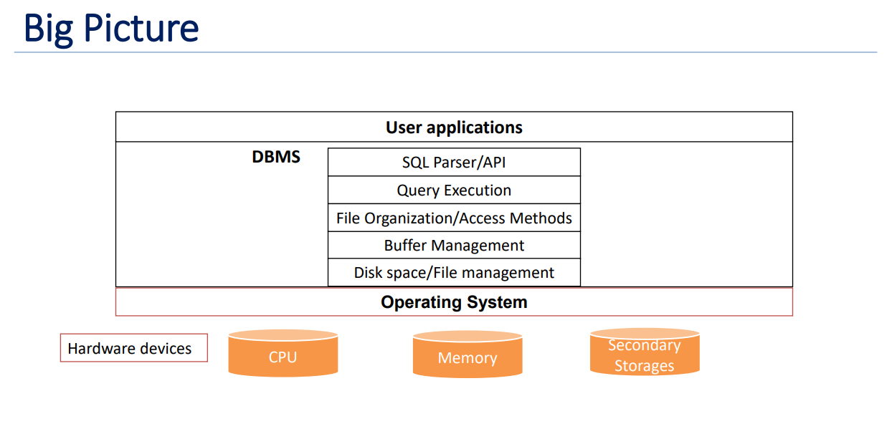In ensuring the durability of our data within Taco DB, our single-threaded mini relational database management system, we took a methodical approach. Recognizing the importance of securely storing data daily, our attention was focused on the DBMS software's lowest layer, responsible for efficient space management on the computer's storage. To achieve this, we created FSFile, a straightforward file system utilizing key Linux I/O system calls such as open(2), close(2), pread(2), pwrite(2), and more. Throughout the Taco DB development process, we intentionally disregarded thread-safety-related requirements, as our database is designed to operate in a single-threaded environment.
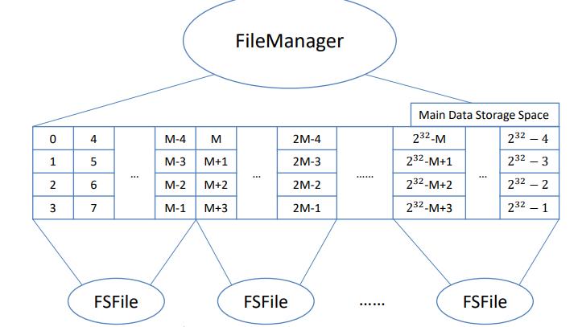In managing database data, storing pages on a disk is crucial. When counting rows in a table, we scan all pages, loading them into memory first. For multiple scans, we face a dilemma: slow on-demand reading/writing or loading all pages at the start, which may not scale. Deciding when to modify data adds complexity—immediate writes or flushing when the program ends? The challenge is ensuring data stays put while balancing efficiency and available resources in this database ballet.
Solution: In tackling the challenge of efficiently handling data within a database, the introduction of a Buffer Pool emerges as a solution. At the core of this solution lies the Buffer Manager, a key component responsible for overseeing the buffer pool. This buffer manager efficiently manages a fixed-size pool of in-memory page frames, each matching the size of the data pages, typically around 4KB. By strategically controlling this pool, the Buffer Manager optimizes the retrieval and manipulation of data, enhancing the overall performance of the database system.
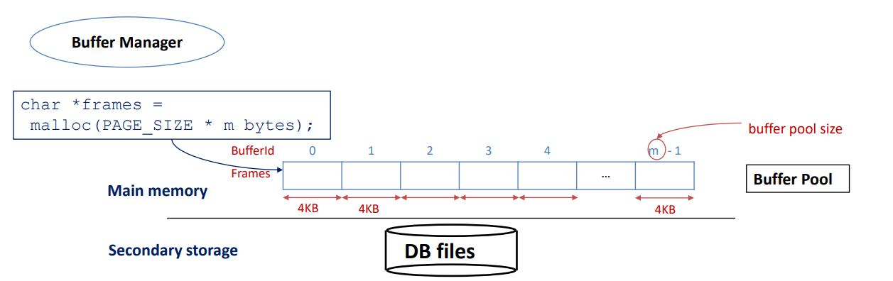Handling Page Request: When a request to read a page with pid = 100 comes in, we encounter two scenarios: a "Buffer Miss" if the page isn't in the buffer pool, and a "Buffer Hit" if the page is already present in the buffer pool. The pseudo code for handling these scenarios is a concise set of instructions guiding the system on what to do when faced with either situation.
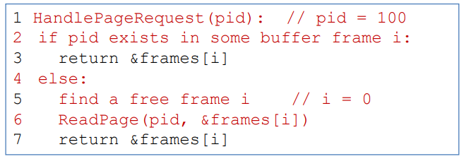In the realm of buffer management, the Buffer Manager plays a pivotal role. However, a common challenge arises when we exhaust the available buffer frames, for instance, when scanning a table with N = 100 pages but a buffer pool size of m = 10. In such cases, various policies come into play to determine the victim – the page to be removed from the buffer pool. Policies like Least Recently Used (LRU), Most Recently Used (MRU), and Clock are employed to make this decision, ensuring efficient utilization of the limited buffer space.
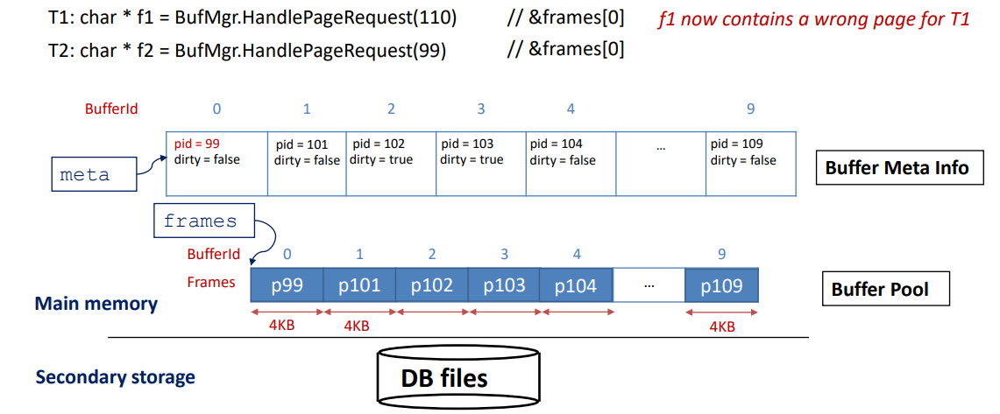Buffer pinning proves to be a useful concept in addressing potential problems with page eviction in database management. One significant concern arises when an evicted page has been modified, such as in the case of an UPDATE operation. It becomes essential to write back the modified page before eviction to maintain data integrity. Concurrency poses a challenge, especially when one thread is reading a block while another attempts to evict it. Although the initial preference was to implement Least Recently Used (LRU), practical issues surfaced during the design phase. Removing a node in the middle of the LRU list when there's a buffer hit and the risk of Sequential Flooding, where every existing page in the buffer gets evicted, raised complications. Consequently, the decision was made to adopt the Clock policy as it serves as a practical approximation of LRU, addressing these challenges in a more efficient manner.
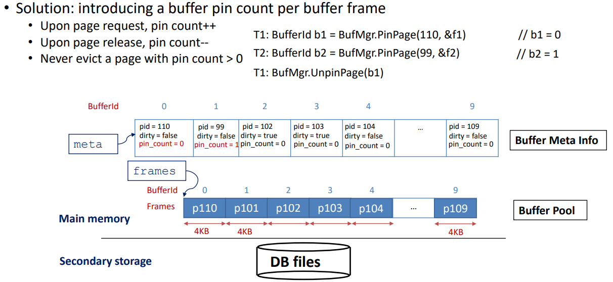During this developmental phase, our focus in Taco DB was on constructing the standardized layout for data pages. This layout now stands as the default format for data pages within Taco DB. The process involved intriguing exploration into lazy page compaction. Additionally, we established the heap file interface, serving as an access method for data retrieval. In essence, a heap file in Taco DB represents an unordered collection of records, offering a fundamental organizational approach within the database. This implementation, layered on the file manager's management of virtual files, stores records in an arbitrary order across a list of pages, providing a foundational structure for data organization in Taco DB.
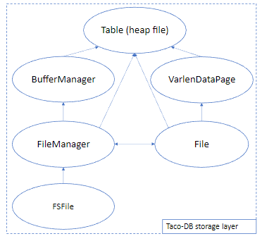This phase marked a significant challenge in our Taco DB development journey. We encountered intense struggles as we wrote and debugged code, revisited our design, contemplated corner cases, and repeated the coding and debugging process tirelessly. Despite the hurdles, we ultimately triumphed by successfully constructing a self-balancing indexing structure entirely from scratch. This experience etched a valuable lesson into our development philosophy: "Weeks of coding can save you hours of planning." The creation of this self-balancing index, akin to the index found in the opening pages of textbooks, emphasized its role in accelerating search operations within a database. An index, as a data structure, plays a crucial role in expediting searches on specific fields within a relation, showcasing the indispensable importance of meticulous planning in the coding process.
B-Tree:The B-Tree, a dynamic and self-balancing structure, boasts a unique characteristic where all paths from the root to the leaf pages maintain the same length, ensuring a consistent tree height denoted as 'h.' This adaptability extends to insertion and deletion operations, making it an efficient choice for dynamic datasets. Within the B-Tree, data entries find their place in the leaf pages, while index entries are housed in the internal pages. Each page, representing a node in the tree, adheres to a minimum occupancy rule, except for the root, typically maintained at around 50%. Essentially, every node in the tree corresponds to a page in the file, contributing to the organized and balanced nature of the B-Tree structure.
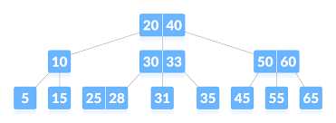We first implemented the barebones structure of B-Tree, then B-Tree Search, then supported B-Tree Insertion and Deletion. It seems simple but I can assure you that it is not. You can find more info here.
In our journey to build Taco DB, we've successfully constructed several crucial layers, each contributing to the database's functionality. These include the layer responsible for storing data on the disk, the Buffer Manager aiding database access, the layer managing record layout on data pages and heap files, and the layer enhancing data retrieval through BTree indexes. Now, as we move forward, the pivotal task is to effectively process user requests. This led to the development of a query processor for Taco DB in this phase. Here, our focus shifted from algorithmic intricacies to common engineering patterns and memory management. We implemented physical plans and execution states for basic operators like selection, projection, cartesian product, and aggregation, marking a significant step towards a fully functioning single-threaded database, albeit without a SQL parser and an optional query optimizer at this stage. Notably, external sorting in Taco DB is treated as a standalone component, offering versatility for various scenarios.
In the realm of databases, joins are a common yet resource-intensive operation, with results potentially ballooning to the size of the cartesian product. To mitigate the cost of joins, various approaches are employed. Among them are the Nested-Loop join, which can be simple, block-oriented, or indexed, and the Sort-Merge join. Another strategy involves Hash joins, with options like basic hash partitioning and hybrid hashing. In our implementation, we tackled the challenge by incorporating both the Sort-Merge join and an Indexed version of the Nested Loop join.
Sort Merge Join: For the entire query processing layer, we used Volcano model for structuring the implementation of the operators. Suppose there are two relations R, E and they have a column in common, say sid Idea is to sort R on R.sid and sort E on E.sid. Merge them and emit the pairs with matching values on the join columns.
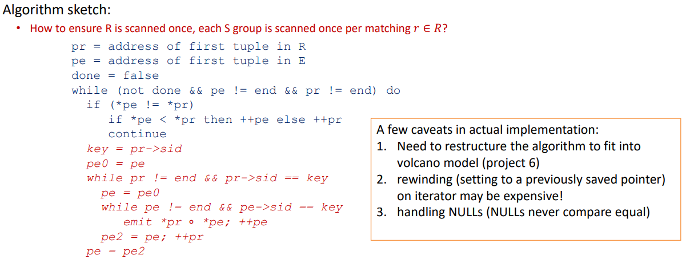Index Nested Loop Join: Indexes, specifically B+-Trees in Taco DB, can be leveraged to perform certain types of joins. We implemented the index nested loop join for equi-joins in this project. As in the System-R style query plan, the inner relation of an index nested loop is always a table with an index built on top of a list of fields. The general idea of the index nested loop join is to use each output record of the outer plan to probe the provided index for the matching records from the inner table.
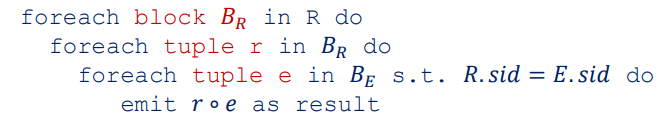Finally, to get a hint on how the entire query processing pipeline (planning, optimization, and execution) works, we manually planned and optimized three queries for TPC-H, which is a common benchmark used to measure DBMS query performance.
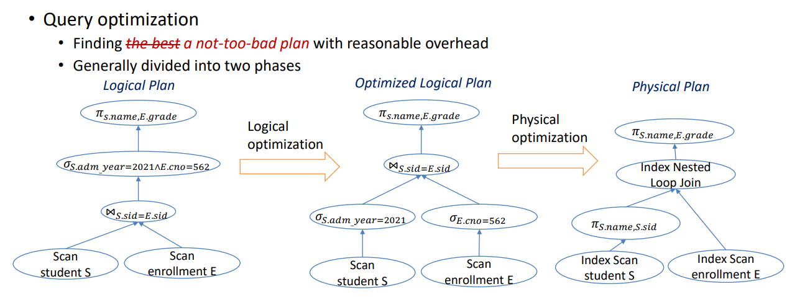